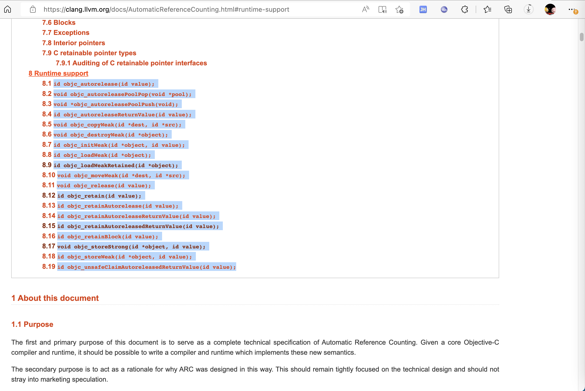

objc系列函数
此处介绍iOS的ObjC的Runtime中，常见的，以objc开头的一些系列函数。
其中对应官网资料就是：
对应的objc开头的系列函数是：
- id
objc_autorelease(id value); - void
objc_autoreleasePoolPop(void *pool); - void *
objc_autoreleasePoolPush(void); - id
objc_autoreleaseReturnValue(id value); - void
objc_copyWeak(id dest, id src); - void
objc_destroyWeak(id *object); - id
objc_initWeak(id *object, id value); - id
objc_loadWeak(id *object); - id
objc_loadWeakRetained(id *object); - void
objc_moveWeak(id dest, id src); - void
objc_release(id value); - id
objc_retain(id value); - id
objc_retainAutorelease(id value); - id
objc_retainAutoreleaseReturnValue(id value); - id
objc_retainAutoreleasedReturnValue(id value); - id
objc_retainBlock(id value); - void
objc_storeStrong(id *object, id value); - id
objc_storeWeak(id *object, id value); - id
objc_unsafeClaimAutoreleasedReturnValue(id value);

下面详细介绍部分函数：
objc_autoreleaseReturnValue
TODO：
- 【整理】iOS逆向心得：iOS函数objc_autoreleaseReturnValue
- 【已解决】iOS逆向Xcode调试：_objc_autoreleaseReturnValue继续运行导致后续release相关代码运行不到
objc_alloc
objc_alloc是NSObject的类的分配空间，常和objc_init搭配使用
TODO：
【整理】iOS底层函数：objc_alloc
objc_getClass
iOS逆向的动态调试时，底层写hook代码，往往会涉及到这个objc_getClass
- 底层写hook代码
举例：
Class NSErrorClass = objc_getClass("NSError");
Class NSDictionaryClass = objc_getClass("NSDictionary");
// 写代码解析传入的变量，是什么类型，然后决定取出对应属性，即request url
//NSURL* getHamErrReqUrl(NSError* curError){
NSURL* getHamErrReqUrl(id erroOrDict){
NSURL* curUrl = NULL;
// if (curError) {
if (erroOrDict) {
NSDictionary* curUserInfo = NULL;
if ([erroOrDict isKindOfClass: NSErrorClass]){
curUserInfo = [erroOrDict userInfo];
} else if ([erroOrDict isKindOfClass: NSDictionaryClass]) {
curUserInfo = (NSDictionary*)erroOrDict;
}
if (curUserInfo) {
id hamErrUrlReq = curUserInfo[@"HAMErrorURLRequest"];
if (hamErrUrlReq != NULL) {
BOOL isUrlReq = [hamErrUrlReq isKindOfClass: NSMutableURLRequestClass];
if (isUrlReq) {
curUrl = [hamErrUrlReq URL];
}
}
}
}
return curUrl;
}
TODO：
【无法解决】iOS越狱检测和反越狱检测：objc_getClass
【整理】iOS运行时Runtime：objc_getClass相关函数
objc_storeStrong
定义：
void objc_storeStrong(id *object, id value);
说明：
Precondition: object is a valid pointer to a __strong object which is adequately aligned for a pointer. value is null or a pointer to a valid object.
Performs the complete sequence for assigning to a __strong object of non-block type [*]. Equivalent to the following code:
内部实现逻辑：
void objc_storeStrong(id *object, id value) {
id oldValue = *object;
value = [value retain];
*object = value;
[oldValue release];
}
This does not imply that a __strong object of block type is an invalid argument to this function. Rather it implies that an objc_retain and not an objc_retainBlock operation will be emitted if the argument is a block.
相关理解：
- 在
Objective-C中，对象的引用关系由引用修饰符来决定，如__strong、__weak、__autorelease等等，编译器会根据不同的修饰符生成不同逻辑的代码来管理内存。- 在
MRC时代Retain修饰符将会使被引用的对象引用计数+1 - 在
ARC中__strong修饰符作为其替代者
- 在
在正向开发写代码，在给__strong变量赋值时
obj = otherObj;
内部其实会调用对应的runtime的函数：
// 会变成如下函数调用
objc_storeStrong(&obj, otherObj);
objc_enumerationMutation
iOS逆向期间，常会看到，伪代码中有个objc_enumerationMutation，其实就是表示：代码循环 而已
-》反推：正向代码中，用了for、while等循环的逻辑。
TODO：
【已解决】iOS底层函数：objc_enumerationMutation
objc_retainBlock
objc_retainBlock是和ObjC中的Block相关的函数。和ARC中的引用计数中相关。
TODO：
【已解决】iOS基础知识：objc_retainBlock
objc_loadWeakRetained
TODO：
【未解决】Xcode的lldb中objc_loadWeakRetained传入的对象是什么类
objc_copyImageNames
TODO：
【无需解决】iOS越狱检测和反越狱检测：objc_copyImageNames